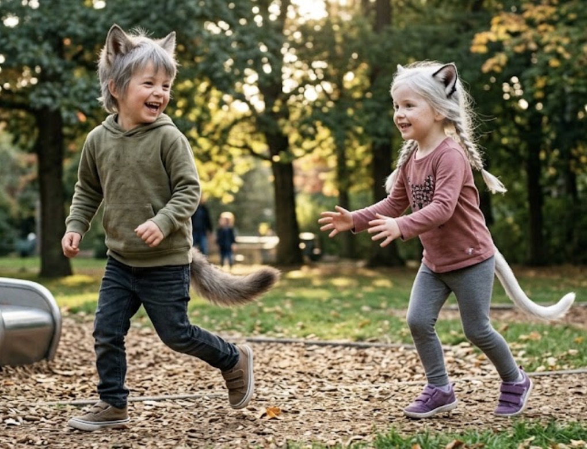

Common
DECODE DATA
Kororen 転錬
REF: ONV-RT-01ヨーヨー程度のサイズを持つ小型車輪生物。平地の多いonva環境において、「回転」という最も効率的な移動手段を選択した象徴的な存在。
不合理な冗長性を廃した世界。1928年の建国以来、onva（ア゛ンヴァ）は合理主義に基づき環境を最適化してきました。
ここに記録されるのは、その最適化された環境に適応し、独自の進化を遂げた生命群のアーカイブです。
ヨーヨー程度のサイズを持つ小型車輪生物。平地の多いonva環境において、「回転」という最も効率的な移動手段を選択した象徴的な存在。

「プロペラ型」の進化を遂げた回転生物。水面や空気の流れを利用し、幻想的な軌道を描いて移動する、流体工学の極致のような生命体。

onvaの都市部で見られる日常的な風景。群れを好むウォーウルフと、個人を尊ぶウォーキャット。異なる特性を持つ子供たちの遊びを通じた交流は、次世代の最適化された社会形成に寄与している。
人間に極めて近い構造を持ちながら、狼の耳と尻尾、そして高い感覚能力を保持する独立した知的種族。社会性が高く、onvaの最適化された都市システムにも深く根付いている。

猫の特性を持つ高等知的種族。単独行動を好み、人間の視覚センサーや「撮影」という行為を情報的拘束として忌避する。その隠密性はonvaの高度な監視網すら潜り抜ける。